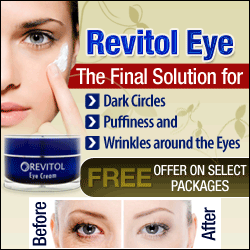

Home Remedies to Get Rid of Dark Circles Under Eyes

Dark circles are not a medical problem, but they can be very annoying and embarrassing. Almost everyone has dark circles under their eyes at one point or another, and they are usually temporary. They are the second most important dermatological problem.
Dark circles are very socially embarrassing: they make a person appear older, tired, stressed and even depressed.
Causes of dark circles -
A common misconception is that fatigue is often the number one cause of dark circles.
1. Instead, the most common cause is nasal congestion. When our nose becomes blocked, the veins that normally flow from our eyes to our nose widen and darken.
2. Swelling of the eyelids while sleeping is another cause of dark circles. When lying down, gravity causes fluid to collect on the lower lids and shadows under the eyes.
3. It can be caused by chronic skin diseases like atopic eczema.
4. Dark circles can also be an inherited trend, a major cause
5. Dark circles can be caused by the natural aging process.
6. Lack of sleep is another factor that is not really a cause, but makes it more noticeable.
7. Other causes include factors that damage the skin, such as excessive exposure to UV-A (UVA) rays or smoking.
8. Pregnancy and menstruation make our skin pale. Many people associate dark circles with hormones.
However, dark circles are a non-hormonal problem.
9. Allergies cause dark circles because reactions to histamine cause dark spots under the eyes.
10. Lack of vitamins can cause dark circles under the eyes.
Treatment and prevention -
Treatment of severe dark circles under the eyes targets the underlying cause, if known, and may include bleach and laser therapy.
However, the best way to avoid dark circles is to eat well, drink plenty of water, and sleep well. Reduces stress and fights fatigue.
Various beauty products claim to have incredible healing benefits for tired eyes. Over-the-counter cosmetics can help reduce dark circles. Try skin creams that contain vitamin C or K, alpha hydroxy acid, and kinetin.
However, you can cleverly camouflage dark circles with a light reflective concealer, which is useful because it contains titanium powder that reflects light in the dark area. Choose a concealer that is lighter than your foundation. If your circles are very dark, choose 2 shades lighter.

Cosmetic surgery to eliminate dark circles
Some cosmetic techniques involve the use of lasers to stimulate the skin’s deep collagen layers, which rejuvenates the skin’s surface to eliminate dark circles.
Laser treatment can thicken the skin by increasing collagen production, making it less likely that you will see a vein around the eyes.
A procedure known as blepharoplasty removes the skin under the eyes and tightens the remaining skin to remove puffiness. This costly process requires recovery time and involves some risk. However, this technique does not address the cause of dark circles.
Some simple home remedies remove dark circles under the eyes.
Home remedies cannot remove dark circles permanently, but they do offer short-term, low-cost solutions that can help hide dark circles.
1- Mix some almond powder with heavy cream and massage the mixture around your eyes before going to bed. This is a useful home remedy for dark circles.
2- You can use cucumber or potato slices to reduce dark circles. Close your eyes and cover your eyelids with a thin slice for up to twenty minutes. This relieves tired eyes and increases blood flow to the skin around the eyes.
3- You can also apply a little cucumber juice to the area. You can even rub the potato, wrap it in a thin cloth, and place it over your eyes. Make sure to wash the area well afterwards and apply some cream or oil around the eyes to hydrate the area. This is another good home remedy for dark circles.
4- Detoxifying the body helps in some cases. This includes fasting for a short time but continuing to drink plenty of water. Eliminate all unhealthy foods that are a regular part of your diet. Give up alcohol, caffeine, sugary drinks, fatty and sugary foods, smoking, etc.
5- Put some lemon or tomato juice on the dark areas two or three times a day. Be careful not to get the juice in your eyes. It is also a useful home remedy for dark circles.
6- Soak some tea bags in clean cold water for a few minutes, drain the excess water and place on the eyes. Keep them there for about ten minutes.
7- Buy vitamin E supplements in capsule form. Gently open the capsule and squeeze the gel onto your finger. Gently and gently rub the gel around your eyes.
8- Squeeze the juice from a cucumber and chill in the refrigerator for about an hour.
Add a little lemon juice and lanolin cream. Apply around the eyes for up to twenty minutes. Wash yourself well. This is useful for removing dark circles.